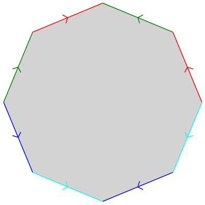

This surface has equation
$$ 4\sqrt{2}(x^2-y^2)z = (r^2-1)((r^2+1)^2-6z^2) $$
where $r=(x^2+y^2+z^2)^{1/2}$. It has genus two.
We can build a surface like this by pasting the sides of an octagon,
following the pattern shown above on the right.
|  |